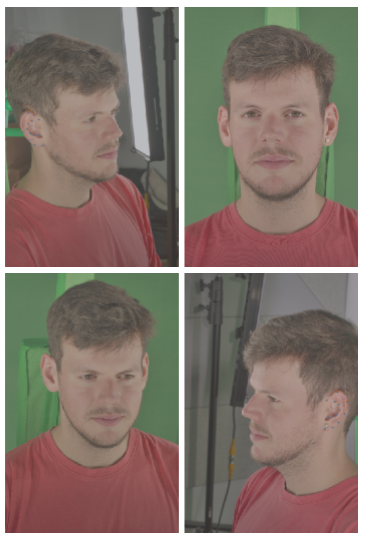
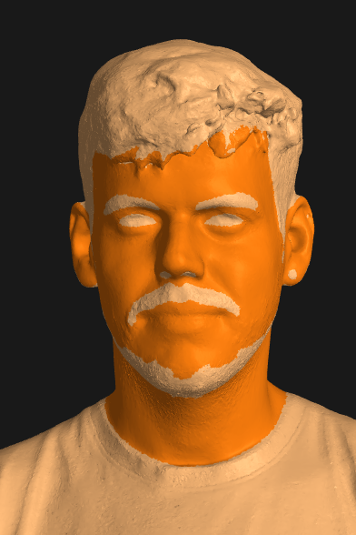
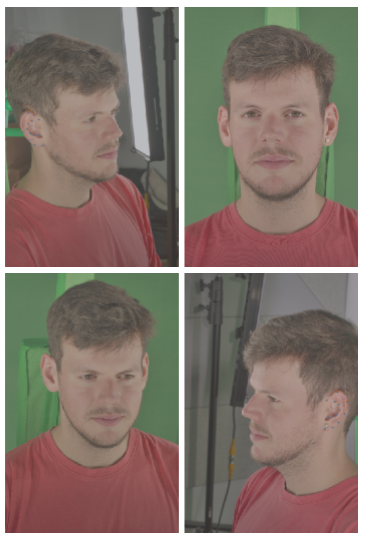
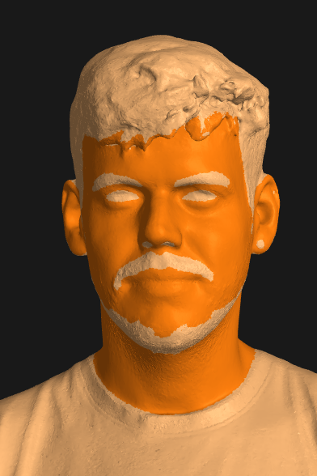

Abstract
Face registration deforms a template mesh to closely fit a 3D face scan, the quality of which commonly degrades in non-skin regions (e.g., hair, beard, accessories), because the optimized template-to-scan distance pulls the template mesh towards the noisy scan surface.
Improving registration quality requires a clean separation of skin and non-skin regions on the scan mesh. Existing image-based (2D) or scan-based (3D) segmentation methods however perform poorly. Image-based segmentation outputs multi-view inconsistent masks, and they cannot account for scan inaccuracies or scan-image misalignment, while scan-based methods suffer from lower spatial resolution compared to images.
In this work, we introduce a novel method that accurately separates skin from non-skin geometry on 3D human head scans. For this, our method extracts features from multi-view images using a frozen image foundation model and aggregates these features in 3D. These lifted 2D features are then fused with 3D geometric features extracted from the scan mesh, to then predict a segmentation mask directly on the scan mesh. We show that our segmentations improve the registration accuracy over pure 2D or 3D segmentation methods by 8.89% and 14.3%, respectively. Although trained only on synthetic data, our model generalizes well to real data.
Model Architecture
Qualitative Comparison

 



Synthetic Hair
We re-render real data examples with a variety of synthetic hairstyles from our digital assets library. Thereafter, we run MVS and registration. Ideally, even when adding different hairstyles, the segmentation mask should allow the downstream registration result to remain consistent. It is clear here that our method allows the segmentation result to remain more consistent with the original registration result.


BibTeX
@article{chen2025pixels2points,
author = {Chen, Victoria Yue and Wang, Daoye and Garbin, Stephan and Winberg, Sebastian and Bednarik, Jan and Bolkart, Timo and Beeler, Thabo},
booktitle = {Eurographics 2025 - Short Papers},
editor = {Cignoni, Paolo and Miguel, Eder},
title = {{Pixels2Points: Fusing 2D and 3D Features for Facial Skin Segmentation}},
year = {2025},
publisher = {The Eurographics Association},
}